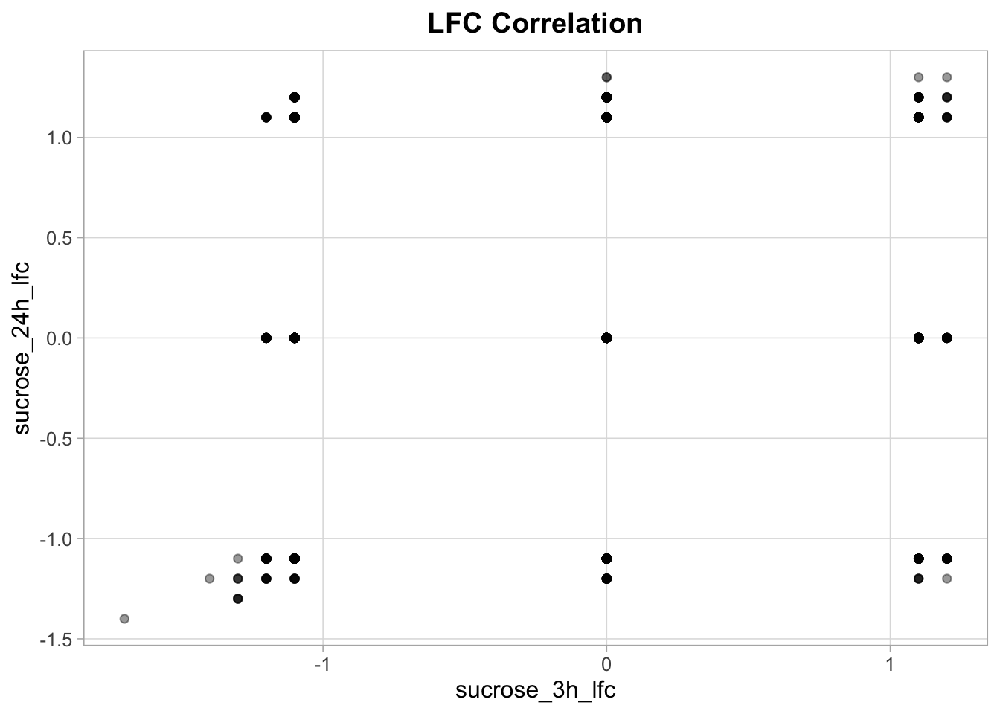
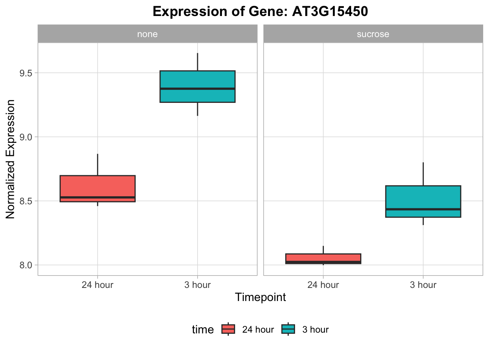
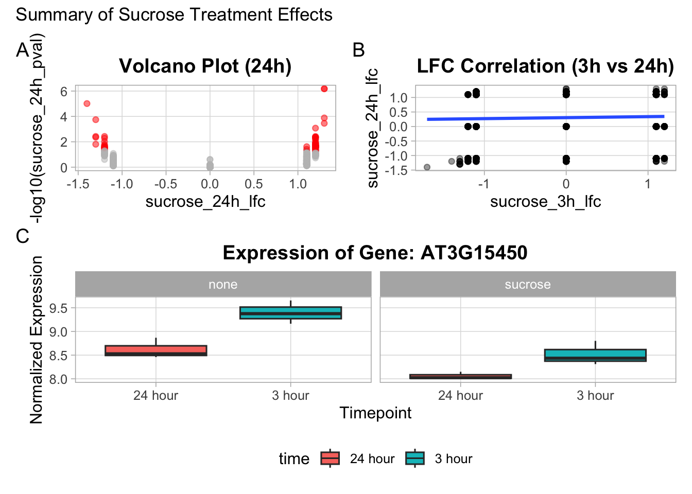

renv::install("gt")
renv::install("patchwork")Exercise - Block 5
Learning Objectives
Upon completing this exercise block, you will be able to:
- Create a reusable custom theme function for
ggplot2. - Apply a custom theme to standardize the appearance of plots.
- Build and style publication-ready tables using the
gtpackage. - Combine
ggplot2plots andgttables into a single, cohesive figure usingpatchwork.
Installing packages
Packages
library(ggplot2)
library(gt)
library(patchwork)
library(dplyr)Exploratory data analysis
data <- readRDS(gzcon(url(
"https://raw.githubusercontent.com/urppeia/publication_figs/main/data.rds"
)))
rownames(data$counts) <- data$counts$Gene_ID
data$counts <- data$counts[, -1]Exercise 1: Create a Universal Theme
To ensure a consistent style across all our figures, let’s create a custom theme function.
A. Create a function called theme_course() that returns a theme object.
B. Inside the function, start with theme_light() and then modify it to do the following:
- Make the plot title bold and centered.
- Move the legend to the bottom.
- Remove minor panel grid lines.C. Apply your new theme_course() to a simple scatter plot to test it.
Solution
# A & B: Create the theme function
theme_course <- function() {
theme_light(base_size = 12) +
theme(
plot.title = element_text(face = "bold", hjust = 0.5),
legend.position = "bottom",
panel.grid.minor = element_blank()
)
}
# C: Test the theme
p_test <- ggplot(data$diff, aes(x = sucrose_3h_lfc, y = sucrose_24h_lfc)) +
geom_point(alpha = 0.4) +
labs(title = "LFC Correlation") +
theme_course()
print(p_test)
Exercise 2: Create a Complex Plot with the Custom Theme
Now, let’s create a more specific plot for our final figure.
A. Find the Gene ID for the most significantly down-regulated gene at the 24h timepoint.
B. Create a dataframe for plotting that contains the expression values for this gene, along with the sample annotations (compound and time).
C. Make a boxplot of expression for this gene.
- `time` should be on the x-axis.
- The plot should be faceted by `compound`.
- The boxes should be filled based on the `time`.D. Apply your theme_course() to this plot and give it an appropriate title.
Solution
# A: Find the gene
sig_gene_down <- data$diff %>%
filter(sucrose_24h_lfc < 0) %>%
arrange(sucrose_24h_pval) %>%
pull(Gene_ID) %>%
head(1)
# B: Prepare data
plot_data_ex2 <- data.frame(
expression = as.numeric(data$counts[sig_gene_down, ]),
compound = data$anno$compound,
time = data$anno$time
)
# C & D: Create the plot
p_boxplot <- ggplot(plot_data_ex2, aes(x = time, y = expression, fill = time)) +
geom_boxplot() +
facet_wrap(~compound) +
theme_course() +
labs(
title = paste("Expression of Gene:", sig_gene_down),
x = "Timepoint",
y = "Normalized Expression"
)
print(p_boxplot)
Exercise 3: Create a Publication-Ready Table with gt
Let’s summarize the top differentially expressed genes in a table.
A. Create a dataframe containing the top 5 up-regulated genes at 24h with a p-value < 0.05. The dataframe should only contain the Gene_ID, sucrose_24h_lfc, and sucrose_24h_pval columns.
B. Use gt() to create a table from this dataframe.
C. Style the table:
- Add a title: "Top 5 Up-regulated Genes at 24h".
- Relabel the columns to be more readable (e.g., "Gene", "log2 Fold Change", "P-value").
- Format the `log2 Fold Change` column to 2 decimal places.
- Format the `P-value` column using scientific notation with 2 decimal places.
Solution
# A: Prepare data
top_up_genes <- data$diff %>%
filter(sucrose_24h_lfc > 0 & sucrose_24h_pval < 0.05) %>%
arrange(sucrose_24h_pval) %>%
head(5) %>%
select(Gene_ID, sucrose_24h_lfc, sucrose_24h_pval)
# B & C: Create and style the gt table
gt_up_genes <- gt(top_up_genes) %>%
tab_header(
title = "Top 5 Up-regulated Genes at 24h"
) %>%
cols_label(
Gene_ID = "Gene",
sucrose_24h_lfc = "log2 Fold Change",
sucrose_24h_pval = "P-value"
) %>%
fmt_number(
columns = vars(sucrose_24h_lfc),
decimals = 2
) %>%
fmt_scientific(
columns = vars(sucrose_24h_pval),
decimals = 2
)Warning: Since gt v0.3.0, `columns = vars(...)` has been deprecated.
• Please use `columns = c(...)` instead.
Since gt v0.3.0, `columns = vars(...)` has been deprecated.
• Please use `columns = c(...)` instead.gt_up_genes| Top 5 Up-regulated Genes at 24h | ||
|---|---|---|
| Gene | log2 Fold Change | P-value |
| AT4G25630 | 1.30 | 6.58 × 10−7 |
| AT5G27120 | 1.30 | 6.58 × 10−7 |
| AT3G18000 | 1.30 | 1.31 × 10−4 |
| AT3G44750 | 1.30 | 3.49 × 10−4 |
| AT3G57150 | 1.20 | 8.36 × 10−4 |
Exercise 4: Combine the Plot and Table
Now let’s combine the plot from Exercise 2 and the table from Exercise 3 into a single figure.
A. Use patchwork to combine p_boxplot and gt_up_genes.
B. The plot should be on top and the table on the bottom.
C. Adjust the layout so that the plot takes up roughly twice as much height as the table. (Hint: use plot_layout(heights = ...)).
D. Add an overall title and tags to the combined figure.
Solution
# A & B: Combine plot and table
# Note: patchwork can work directly with gt objects
final_figure <- p_boxplot / gt_up_genes
# C: Adjust layout
final_figure <- final_figure + plot_layout(heights = c(2, 1))
# D: Add annotation
final_figure <- final_figure + plot_annotation(
title = "Gene Expression and Regulation at 24h",
tag_levels = 'A'
)
print(final_figure)
Exercise 5: Creating a Complex Multi-Panel Figure
Let’s combine multiple plots from previous exercises to showcase different patchwork layouts.
A. Recreate the 24h volcano plot from Exercise 4 of Block 4. Apply your theme_course() and store it in an object named p_volcano.
B. Recreate the LFC correlation plot (3h vs 24h) from Exercise 1 of Block 4, which includes a regression line. Apply your theme_course() and store it in an object named p_correlation.
C. Create a nested layout:
- Place `p_volcano` and `p_correlation` side-by-side.
- Place `p_boxplot` (from Exercise 2 of this block) underneath the other two.
- Add a title and tags to the final composition.
Solution
# A: Recreate the volcano plot
p_volcano <- ggplot(data$diff, aes(x = sucrose_24h_lfc, y = -log10(sucrose_24h_pval))) +
geom_point(aes(color = sucrose_24h_pval < 0.05 & abs(sucrose_24h_lfc) > 1), alpha = 0.5) +
theme_course() +
scale_color_manual(values = c("grey", "red")) +
theme(legend.position = "none") +
labs(title = "Volcano Plot (24h)")
# B: Recreate the correlation plot
p_correlation <- ggplot(data$diff, aes(x = sucrose_3h_lfc, y = sucrose_24h_lfc)) +
geom_point(alpha = 0.4) +
geom_smooth(method = "lm", se = FALSE) +
theme_course() +
labs(title = "LFC Correlation (3h vs 24h)")
# C: Create the nested layout
nested_layout <- (p_volcano + p_correlation) / p_boxplot
# Add annotation
nested_layout + plot_annotation(
title = "Summary of Sucrose Treatment Effects",
tag_levels = "A"
)`geom_smooth()` using formula = 'y ~ x'
Session information
Tip
sessionInfo()R version 4.5.1 (2025-06-13)
Platform: aarch64-apple-darwin20
Running under: macOS Tahoe 26.1
Matrix products: default
BLAS: /Library/Frameworks/R.framework/Versions/4.5-arm64/Resources/lib/libRblas.0.dylib
LAPACK: /Library/Frameworks/R.framework/Versions/4.5-arm64/Resources/lib/libRlapack.dylib; LAPACK version 3.12.1
locale:
[1] en_US.UTF-8/en_US.UTF-8/en_US.UTF-8/C/en_US.UTF-8/en_US.UTF-8
time zone: Europe/Zurich
tzcode source: internal
attached base packages:
[1] stats graphics grDevices datasets utils methods base
other attached packages:
[1] dplyr_1.1.4 patchwork_1.3.2 gt_1.1.0 ggplot2_4.0.0
loaded via a namespace (and not attached):
[1] Matrix_1.7-3 gtable_0.3.6 jsonlite_2.0.0
[4] compiler_4.5.1 BiocManager_1.30.26 renv_1.1.5
[7] tidyselect_1.2.1 xml2_1.4.0 splines_4.5.1
[10] scales_1.4.0 yaml_2.3.10 fastmap_1.2.0
[13] lattice_0.22-7 R6_2.6.1 labeling_0.4.3
[16] generics_0.1.4 knitr_1.50 htmlwidgets_1.6.4
[19] tibble_3.3.0 pillar_1.11.1 RColorBrewer_1.1-3
[22] rlang_1.1.6 xfun_0.53 fs_1.6.6
[25] sass_0.4.10 S7_0.2.0 cli_3.6.5
[28] mgcv_1.9-3 withr_3.0.2 magrittr_2.0.4
[31] digest_0.6.37 grid_4.5.1 rstudioapi_0.17.1
[34] nlme_3.1-168 lifecycle_1.0.4 vctrs_0.6.5
[37] evaluate_1.0.5 glue_1.8.0 farver_2.1.2
[40] rmarkdown_2.30 tools_4.5.1 pkgconfig_2.0.3
[43] htmltools_0.5.8.1